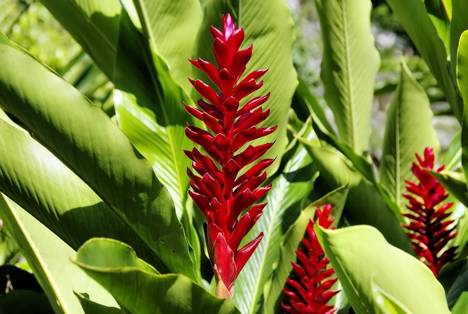

Floricultura Aldeia São Lourenço
Minha Conta
Tipos de Flores
Buquê de flores
Flores em Vasos
Arranjos de Flores

Flor Alpínia
R$139,90
Para paisagens tropícais, as alpínias tem flores belíssimas com cores que variam do vermelho ao rosa, podendo até se apresentar na cor branca. A flor não resiste bem ao frio e á baixa umidade, exigindo rega frequente e locais com temperaturas amenas.
Arranjo de Flores Alpínia
Adicionar ao Carrinho
Finalizar Compra